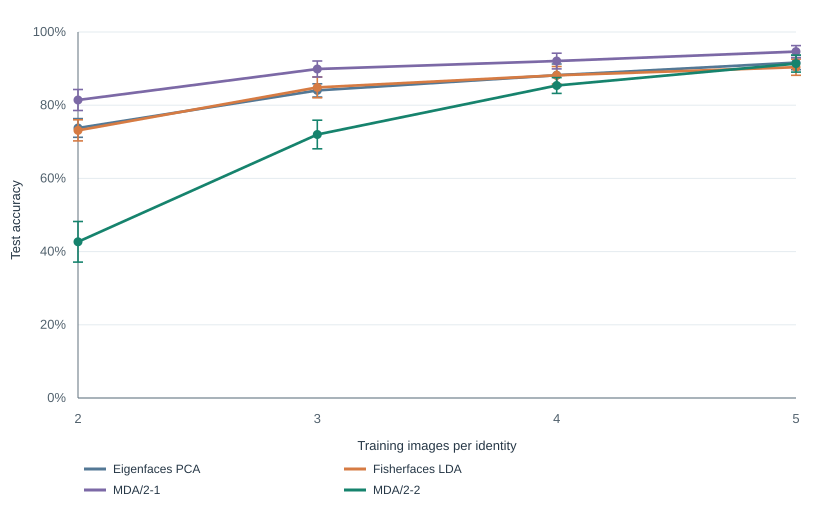
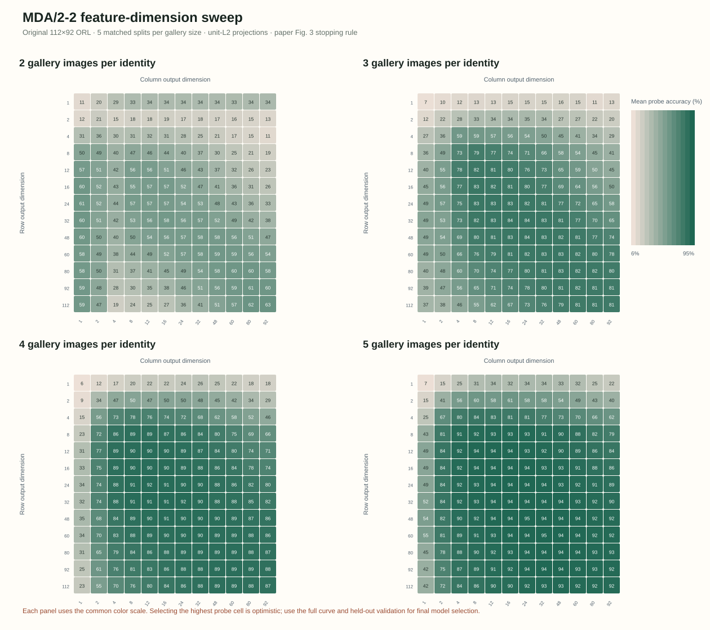

INPUT
Face as a matrix
Each grayscale image is a height-by-width array, not a flattened vector.
Group 27 studies Multilinear Discriminant Analysis (MDA), a method that learns from an image as a matrix instead of flattening every pixel into one long list. We ran the original 112×92 ORL images, compared four methods on matched splits, and swept MDA's row and column dimensions.
Learn both directions: Uᵀ X V
The 2007 paper proposes MDA for supervised dimensionality reduction. Its central idea is to preserve the image's row and column structure while learning features that separate identities.
We compare the methods with the same gallery/probe splits and the same nearest-neighbour classifier, then ask how results change when MDA's projection axes are scaled differently.
PCA looks for directions with high overall variation. LDA uses identity labels to separate classes. MDA extends that supervised idea to image matrices and alternates between their modes.
Each grayscale image is a height-by-width array, not a flattened vector.
Update row projection U, then column projection V, using identity labels.
Project each probe and assign the identity of the closest gallery image.
MDA/2-1 learns one image mode and leaves the other unchanged. MDA/2-2 learns both row and column projections, then compares the resulting compact features.
Euclidean nearest-neighbour distance changes when feature axes are rescaled. With two gallery images, changing the matched MDA/2-2 run from unit-L2 to within-scatter axes changes accuracy from 42.7% to 5.3%. The paper does not specify this scaling convention fully.
These are mean probe accuracies and sample standard deviations over 30 deterministic splits. Every method sees the same split; learned projections use gallery images only. The dimension sweep uses five splits and keeps all settings.

| Images | PCA | Fisher | MDA/2-1 | MDA/2-2 |
|---|---|---|---|---|
| 2 | 73.8 ± 2.5 | 73.1 ± 2.9 | 81.4 ± 2.9 | 42.7 ± 5.5 |
| 3 | 84.0 ± 1.8 | 84.9 ± 2.8 | 89.9 ± 2.2 | 72.0 ± 3.9 |
| 4 | 88.2 ± 3.1 | 88.2 ± 2.4 | 92.1 ± 2.1 | 85.4 ± 2.2 |
| 5 | 91.6 ± 2.0 | 90.4 ± 2.2 | 94.6 ± 1.6 | 91.4 ± 2.3 |
Bold marks the highest mean in each row. Fixed settings: PCA 36, Fisherfaces up to 36, MDA/2-1 row dimension 6, MDA/2-2 6×6.

Our fixed 6×6 MDA/2-2 result is far below the paper's best score with two and three gallery images. A five-split sweep over 156 dimension pairs improves it, but the best MDA/2-2 mean still reaches only 62.9% at two images, versus the paper's 90.1%. Those sweep maxima use the probe scores to select dimensions, so they are optimistic diagnostics. Matched within-scatter scaling also lowers MDA/2-2 from 42.7% to 5.3% at two images. The paper does not publish its full search range or split seeds; this is a reproducibility gap for the team to audit, not proof the paper is wrong.
The original-resolution images and stated preprocessing now match the paper's description. The remaining differences are the undocumented random splits and dimension selection, plus implementation details that need independent review.
| Study detail | Yan et al. (2007) | Group 27 |
|---|---|---|
| Images | Original ORL images at 92 × 112 pixels | Original 92 × 112 pixel PGM files; historical 64 × 64 results kept separately |
| Feature settings | Best results among tested dimensions; Fisherface/O is dimension-selected | 30-split table uses fixed dimensions; five-split grid searches 156 MDA/2-2 row/column pairs |
| Evaluation | Random gallery/probe partitions; exact seeds and full search details are not reported | 30 new matched splits per gallery size; every group score and seed is saved |
| Classifier | Nearest neighbour | Euclidean 1-nearest-neighbour |
The 30-split standard deviations describe split variation on this fixed dataset. The grid's top probe score is test-selected; neither is a population-level confidence interval.
Your job is to make the results runnable, fair, and transparent. The original-resolution fixed runs and dimension sweep are done; focus now on the independent audit, handoff, and final explanation.
These roles divide production work. Everyone should still be ready to explain the whole story during the presentation and Q&A.
Explain DTC, alternating mode updates, and connections to PCA/LDA.
Check data, splits, baselines, source-paper fidelity, and result values.
Maintain runnable code, matched results, paired analysis, and Git progress.
Integrate limitations, extension ideas, report structure, and slide flow.
Set up Python from the repository README. The dataset is fetched into a local cache; face images are not committed. Use a new output path for new runs.
# Original 112×92 ORL study (download att_faces.zip; see data guide) python3 src/run_experiment.py --dataset orl-original --repeats 30 \ --max-iter 10 --fisher-pca-max 10400 --mda-stopping-rule paper_figure \ --output-dir results/rerun/orl-original/unit_l2 # Reproduce all row×column dimensions and create the heatmap python3 scripts/run_orl_dimension_sweep.py --mda-stopping paper_figure \ --mda-dimensions 1,2,4,8,12,16,24,32,48,60,80,92,112 --repeats 5 \ --output-dir results/rerun/orl-original/dimension-sweep python3 scripts/render_mda_dimension_heatmap.py \ results/rerun/orl-original/dimension-sweep/dimension_summary.csv \ results/rerun/orl-original/dimension-sweep/mda22_dimension_heatmap.svg
The repository keeps the plan, protocol, code, dated results, report, and progress together. The current remote is private while the group reviews it.